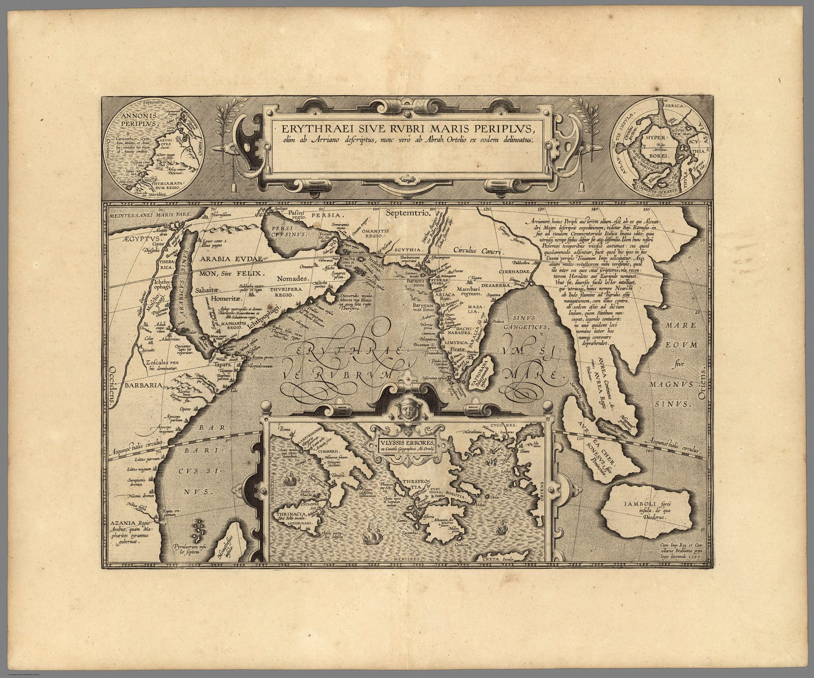

A map made from an ancient text
This 1597 plate belongs to Ortelius’s Parergon. Its title identifies the Erythraean – or Red – Sea in the broad ancient sense, encompassing the Red Sea, Arabian Sea and Indian Ocean. Ortelius drew the map from classical authorities rather than from contemporary navigation.
Ports of the classical trading world
The sheet gives spatial form to the emporia, coasts and routes associated with ancient commerce between the Mediterranean, Arabia, East Africa and India. The Indian subcontinent appears as a sequence of ports at the end of a maritime network described in Greek and Roman texts.
History, myth and geography
The inset tracing the wanderings of Ulysses makes the map’s intellectual world explicit. Ortelius’s ancient geography did not enforce the modern distinction between commercial record, historical reconstruction and literary memory. All were parts of the classical archive he sought to visualise.
On the sheet
Ortelius’s Deccan is on the sheet. Down the west coast of the peninsula run the ports of the Periplus – Barygaza, the Ariaca regio, Limyrica – and inland, in capitals, DACHINABADES, the Greek text’s rendering of Dakshinapatha, the southern road; Masalia and Desarena lie on the eastern shore, Taprobana in the sea below, the Sinus Gangeticus beyond, and at the far right the Aurea Chersonesus and the Mare Eoum sive Magnus Sinus. The title says the map was ‘formerly described by Arrian, now delineated from him by Abraham Ortelius’, and a block of text at the upper right weighs whether Arrian was really the author, citing Ramusio. Two small roundels flank the cartouche: Hanno’s voyage down the African coast on the left, and on the right the northern seas, with Thule and the Hyperboreans.
The gaze
Ulysses in the inset sets the tone. The Indian ports on this plate were reached, in Ortelius’s mind, by the same antiquity that produced the wanderer, and a Portuguese captain on the Malabar coast was therefore a latecomer to an old route. Classical scholarship supplied Europe with a prior claim on the ocean.
In the Deccan timeline
Horses before the Portuguese (14th–15th century) · The horse trade (16th century)